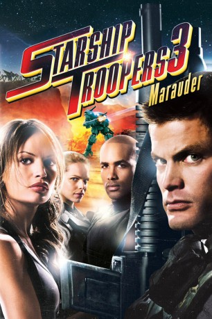

#7044 Starship Troopers 3: Marauder
 
 IMDB-Wertung: 4.3 / 10
IMDB-Wertung: 4.3 / 10  Tomatometer: 50
Tomatometer: 50  Metascore: 0
Metascore: 0 
Colonel Johnny Rico meldet sich zurück, um mit seinem Team in geheimer Mission eine kleine Crew von Troopers vom einsamen Planeten OM-1 zu retten. Im Gefecht gegen altbekannte und neue Bugs ist die brandneue “Marauder”-Waffentechnologie ihre letzte Hoffnung, um ein verräterisches Element zu besiegen, das innerhalb der Föderation selbst operiert. Während Captain Lola Beck und der Rest der Starship-Crew unter härtesten Bedingungen ums Überleben kämpfen, wird ihnen langsam klar, dass auf OM-1 etwas ganz und gar nicht in Ordnung ist. Die Bugs scheinen über eine Geheimwaffe zu verfügen, die die ganze menschliche Rasse auslöschen könnte.
Jahr: 2008
Dauer: 104 Minuten
FSK: 18
Land: USA Studio: SPETonspuren: DD5.1 - ,
Untertitel: Deutsch,
Auflösung: 1080p (1920x1040) Größe: 8704 MB
Genre: Action, Sci-Fi, Abenteuer
Regisseur: Edward Neumeier
Drehbuch: Edward Neumeier
Soundtrack:
Darsteller:
 Casper Van Dien als Colonel Johnny Rico
Casper Van Dien als Colonel Johnny Rico- Jolene Blalock als Captain Lola Beck
 Stephen Hogan als Sky Marshal Omar Anoke
Stephen Hogan als Sky Marshal Omar Anoke Boris Kodjoe als Gen. Dix Hauser
Boris Kodjoe als Gen. Dix Hauser- Amanda Donohoe als Admiral Enolo Phid
- Marnette Patterson als Holly Little
 Stelio Savante als Chief Bull Brittles
Stelio Savante als Chief Bull Brittles- Cécile Breccia als Lt. Link Manion
 Garth Breytenbach als Pvt. Slug Skinner
Garth Breytenbach als Pvt. Slug Skinner Tanya van Graan als Sgt. A. Sunday
Tanya van Graan als Sgt. A. Sunday- Cokey Falkow als Jingo Ryan
 Grant Swanby als Barkeeper
Grant Swanby als Barkeeper- Damon Berry als Lt. Jackson
 Joe Vaz als Elmo Gonif
Joe Vaz als Elmo Gonif Karl Thaning als Someone
Karl Thaning als Someone Tyrone Keogh als MP Sergeant
Tyrone Keogh als MP Sergeant- Jenny Stead als Lt. Darla Lamb
 Adam Neill als Trooper - Alamo
Adam Neill als Trooper - Alamo- Lauren McGregor als Young Mother
- Robyn Olivia Heaney als Com Sergeant
 Jenna Saras als Pretty Pilot
Jenna Saras als Pretty Pilot Corey Burton als Official
Corey Burton als Official- Danny Keogh als Dr. Wiggs
- Graeme Richards als Lt. A. Danner
- Antonio Summerton als Sgt. M. Hightower
- Nicole Salandra als Sgt. J. Kirby
- Stephen Jennings als Commander Danko
- Anthony Bishop als Capt. Rye
- Rob Vega als Senior Exec.
- Murray Todd als Farmer #1
- Richard Thomson als Farmer #2
- Kira Wilkenson als Someone Else
- Brendan Murry als Sergeant
 Adrian Collins als Wounded Soldier
Adrian Collins als Wounded Soldier- Aubrey Shelton als Politician, Bomb
- Kevin Otto als Federal Expert, Bomb
- Peter Krummeck als Retired Admiral, Bomb
- Victoria Bartlett als Mom - Bomb
- Craig Swanepoel als Cute Boy Pilot
- Fred Abrahamse als Justice Ari
- Mudi Mudau als Attractive Captain
- Bernard Fisher als Trooper
- Donal Slemon als Tech 1
- Alan Glauber als Street Preacher
- Tarryn Page als Another Preacher
- Bongo Mbutuma als Sheepish Trooper
- Anton Moon als Chubby Trooper
- Andre Laubscher als Goat Farmer
- Billy Hendrickson als Trooper , uncredited
- Sean Allen Jones als Trooper , uncredited
Datei: X:\FSK18-Collections\Starship Troopers\Starship Troopers 3 Marauder (2008, FSK18, 1920x1040).mkv seit 18.09.2017
Festplatte: FSK18
 Es gibt insgesamt 8 Filme in der Gruppe 'FSK18-Collections\Starship Troopers'
Es gibt insgesamt 8 Filme in der Gruppe 'FSK18-Collections\Starship Troopers'